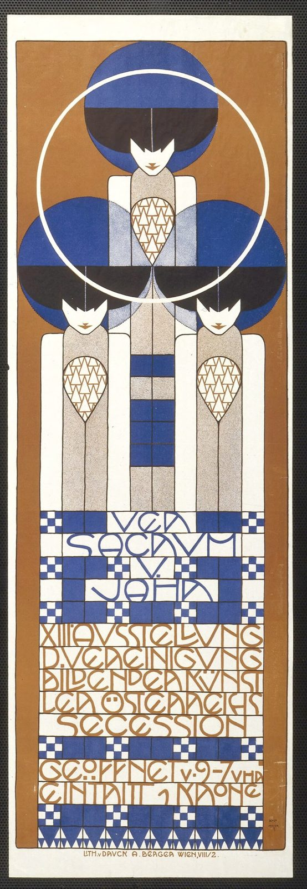

References / Poster / 306
Poster for the 13th Secession exhibition
Koloman Moser’s poster of 1902 stacks three flat, frontal figures above a block of lettering set between checkered bands, all on one central axis.
- Source
- Gallica (BnF): Ver Sacrum V Jahr, XIII Ausstellung … Secession, affiche, Kolo Moser
- Creator
- Koloman Moser
- Made
- 1902
- Style
- Vienna Secession (agent-proposed, not yet reviewed by a person)
- Moods
- Geometric, elegant, precise
- Evidence
- Inspected the Bibliothèque nationale de France copy (Gallica btv1b52506931h) at 554 × 1600 px through IIIF, and the Commons copy of the same scan at 960 × 2772 px. The MAK holds two copies (PI 118-1, 177 × 70 cm, and PI 118-2, 94.4 × 32 cm); I did not inspect their images at full size, so differences between sizes are not recorded.
- Reviewed
- Rights
- Open license, stored. License: public domain. Rights policy
Context
The MAK records the poster as designed by Koloman Moser for the Vienna Secession, printed by Albert Berger, Vienna, 1902, in lithography. The inscription gives the exhibition dates as 1 February to 16 March 1902. MAK PI 118-2, MAK PI 118-1.
The Museum of Modern Art holds a copy as “Ver Sacrum (Sacred Spring) (Poster for the Thirteenth Secession exhibition)”, 1902. MoMA 133907.
Observed
- The format is tall and narrow. An ochre-brown frame surrounds a white field.
- Three identical women stand on the central axis, one above and two below. Each has a large blue and black disc of hair, a white face, and a narrow, flat, rectangular body with a teardrop-shaped panel of small triangles.
- A thin white circle is drawn around the upper figure’s head.
- A column of blue squares runs down the centre between the lower figures.
- Below, “VER / SACRUM / V. / JAHR” is lettered in blue and “XIII. AUSSTELLUNG / D. VEREINIGUNG / BILDENDER KÜNST / LER ÖSTERREICHS / SECESSION” in brown. Every line is ruled above and below, and the capitals fill each line from edge to edge; words break where the line ends.
- Bands of blue and white checkerboard squares separate the text blocks and frame “VER SACRUM”.
- Opening hours and the entry price sit in two more ruled brown lines; a row of small triangles closes the bottom. The printer’s line “LITH. v. DRUCK A. BERGER WIEN, VIII/2” runs under the frame.
Why it belongs
This is the style in one sheet: figure and letters become modules on one grid, and the checkerboard bands work as rules between text blocks.
Breaking words to fill the line, as in “KÜNST / LER”, shows that the block shape mattered more than word breaks.
Borrow
Put a thin band of small checkerboard squares between text blocks, like a rule.
Rule every heading line and let the capitals fill it edge to edge.
Repeat one flat figure or icon three times on a central axis.
Measured
Machine-extracted by tools/image-traits.py on . Full measurement.
- Mean chroma
- 0.17
- Palette
- #fefdf4 17%
- #b07945 16%
- #d5c8b8 7%
- #f4f1e5 7%
- #45568d 5%
- #343230 4%
- #433c3a 4%
- #282624 4%

